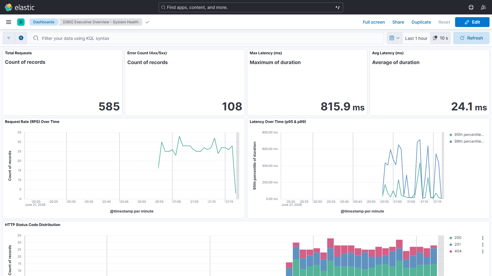

Tài liệu Official Rollout dành cho các khối kiến trúc, phát triển, vận hành và đảm bảo chất lượng hệ thống.
* Tài liệu tiêu chuẩn đã được nhúng sẵn định dạng hiển thị. Bác có thể xem trực tiếp 100% bằng trình duyệt mà không cần cài thêm extension! 🎉
Khả năng quan sát (Observability) không phải là việc ghi log tràn lan, mà là xây dựng một hệ thống có thể "tự khai báo" trạng thái của nó thông qua 3 trụ cột dữ liệu chuẩn hóa, được liên kết chặt chẽ với nhau.
Ghi nhận sự kiện rời rạc. Chứa đựng các bản ghi văn bản có cấu trúc (Structured JSON) mô tả chi tiết điều gì đã xảy ra, vào lúc nào, với những tham số (context) gì.
Theo dõi bối cảnh luồng. Xâu chuỗi các logs và hành động qua nhiều microservices lại thành một câu chuyện duy nhất thông qua `TraceId` và `SpanId`.
Đo lường tổng hợp. Các con số thống kê (RPS, CPU, Error Rate) để giám sát sức khỏe tổng thể và thiết lập cảnh báo tự động thay vì phải đếm từng dòng log.
Dev KHÔNG CẦN phải tự cấu hình Serilog, Elasticsearch, OpenTelemetry hay loay hoay với việc giấu thông tin nhạy cảm. Trách nhiệm duy nhất của Dev là:
dotnet add package ISC.Observability
📦 Mở trang NuGet
builder.AddStandardObservability("MyService") tại Program.cs.app.UseStandardObservability()._logger.LogInformation().TraceId, gài vào Response Header và truyền qua các service khác để xâu chuỗi luồng.***.Ứng dụng không trực tiếp kết nối với các hệ thống lưu trữ (Elasticsearch/Kafka) để tối ưu hiệu năng. Toàn bộ quá trình xuất dữ liệu đều thông qua giao thức chuẩn OTLP đẩy về bộ thu thập (Collector) do DevOps quản trị.
⚠️ ANTI-PATTERN: NGHIÊM CẤM DEV PUSH LOG TRỰC TIẾP VÀO KAFKA
Trong hệ thống cũ, Dev có thói quen tự cài thư viện Kafka Producer vào App và bắn thẳng log sự kiện vào Topic. Điều này gây ra hậu quả nghiêm trọng:
- Log bị phân mảnh: Nửa nằm ở Kafka, nửa nằm ở hệ thống khác, mất hoàn toàn
TraceIdxâu chuỗi.- Trôi lọt dữ liệu nhạy cảm (PII) do không đi qua bộ lọc tập trung.
- App bị phình to (Bloated) và tốn resource để duy trì kết nối Kafka.
GIẢI PHÁP CHUẨN HÓA (Single Source of Truth):
Từ nay, Dev chỉ có 1 đường ghi log duy nhất: Ghi log qua `ILogger` và để SDK tự động bắn OTLP lên Collector. Dev hoàn toàn không cần đụng đến Kafka!
Nếu hệ thống (Data Lake, Billing...) cần tiêu thụ log từ Kafka, DevOps sẽ cấu hình otel-collector-config.yml tạo ra một Pipeline xuất log từ Collector sang Kafka bằng bộ kafkaexporter. Bằng cách này, log trên Kafka được đảm bảo 100% nhất quán, có chứa TraceId và đã được PII Masking sạch sẽ.
Mục đích cuối cùng của Observability không phải là vẽ ra các biểu đồ cho đẹp, mà là thiết lập một Quy trình Vận hành Khắc phục Sự cố (Incident Response) chuẩn mực. Khi sự cố xảy ra, các team sẽ phối hợp thông qua 4 lớp phòng ngự (Dashboards) sau:
Người dùng: System Admin, Tech Lead, Product Manager.
Hành động: Giám sát 24/7. Nhìn vào các chỉ số sinh tồn (KPIs) như RPS (Lưu lượng), Lỗi 5xx, và Độ trễ p99. Nếu thấy Error Rate tăng vọt hoặc Latency dâng cao thành vệt đỏ trên timeline -> Kích hoạt quy trình báo động toàn team.
Người dùng: Developers.
Hành động: Nhận được báo động từ Lớp 1, Dev lập tức mở Dashboard này. Tìm ra ngay lập tức Top 10 API nào đang chậm nhất hoặc API nào đang quăng lỗi. Click vào API đó để lấy TraceId, vứt vào khung search để xâu chuỗi toàn bộ luồng chạy của Request, tìm ra chính xác Class/Function hoặc câu Query DB nào gây lỗi. Không cần đoán mò!
Người dùng: DevOps, SRE, Tech Lead.
Hành động: Nếu Lớp 2 không tìm thấy lỗi do logic code, nguyên nhân có thể do hạ tầng. DevOps dùng Dashboard này để soi xem hệ thống có bị "nghẽn cổ chai" (Bottleneck) hay không: RAM có bị rò rỉ (Memory Leak)? GC (Garbage Collector) có đang bị đơ (Pause)? ThreadPool có bị quá tải không? Từ đó quyết định Scale Up server hay khởi động lại.
Người dùng: QA, PM.
Hành động: Tránh tình trạng "mất bò mới lo làm chuồng". Trước khi một Service được phép Release lên Production, QA mở Dashboard này lên. Nếu số lượng Service hiển thị không đúng, hoặc Service mới chưa bắn tín hiệu [Compliance=True] -> Lập tức reject bản Release, yêu cầu Dev gắn SDK theo chuẩn.
Đây là giao diện thực tế của 4 Dashboards đã được triển khai lên Kibana. Mỗi Dashboard phục vụ một đối tượng và mục tiêu riêng biệt trong quy trình vận hành.
KPIs sinh tồn: Tổng request, Error Count, Max/Avg Latency · Request Rate theo thời gian · HTTP Status Distribution

👆 Click để mở Dashboard trong Kibana